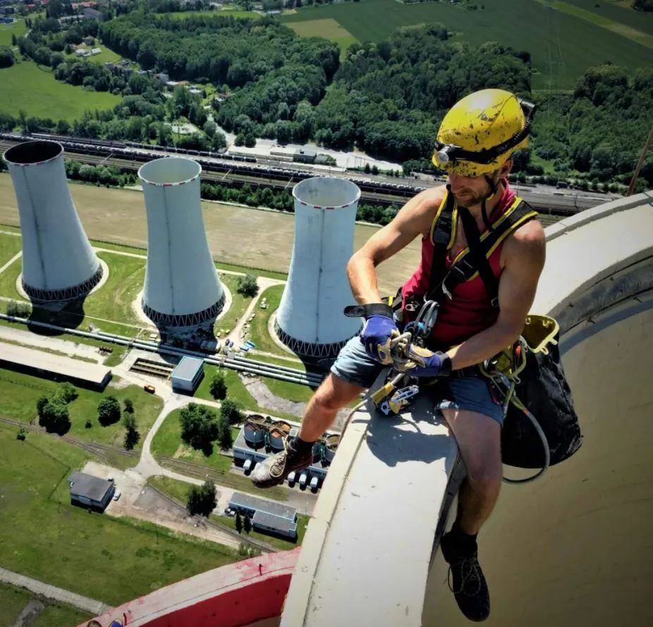

Výškové práce horolezeckou technikou
Služby horolezců pro Prahu, Středočeský kraj a Táborsko. Opravy, údržba a čištění budov na místech, kam se lešení ani plošina nedostane.
Konzultace a nacenění zdarma · Odborná způsobilost · Moderní vybavení
Naše služby
Specializujeme se na obtížně proveditelné výškové práce pomocí průmyslové lezecké techniky – od technicky náročných činností po běžnou údržbu.
-
Natěračské práce
Nátěry fasád, střech a ocelových konstrukcí ve výškách – včetně stožárů a mostů.
-
Zednické práce
Opravy fasád a zdiva na obtížně přístupných místech budov.
-
Svářečské a montážní práce
Instalace a demontáže zařízení a konstrukcí ve výškách.
-
Telekomunikační a elektromontážní práce
Montáže na stožárech, komínech a střechách budov.
-
Čištění fasád a oken
Čištění a mytí fasád i oken výškových budov bez lešení.
-
Oprava a údržba budov
Údržbové a další odborně méně náročné služby ve výškách.
Proč si vybrat nás
-
Jsme odborně způsobilí
Rizikové výškové práce provádíme kvalifikovaně a bezpečně.
-
Dostaneme se kamkoli
Běžně pracujeme na stěnách budov, nádržích, komínech, stožárech i mostech.
-
Moderní vybavení
Nejmodernější technika znamená rychlé a efektivní provedení zakázky za konkurenceschopné ceny.
-
Konzultace zdarma
Odbornou konzultaci a nacenění poskytujeme zdarma. Řešení připravíme na míru – i pro obtížně dostupná místa.

Časté dotazy
Co jsou výškové práce horolezeckou technikou?
Speciální odvětví výškových prací: horolezci používají lana, karabiny a další vybavení průmyslového lezectví, aby se bezpečně dostali na obtížně přístupná místa – bez lešení a bez plošiny.
Kde výškové práce provádíte?
Především v Praze a Středočeském kraji a na Táborsku. Po domluvě jezdíme i do dalších regionů České republiky.
Jaké práce ve výškách nabízíte?
Natěračské, zednické, svářečské, telekomunikační a elektromontážní výškové práce, opravy a údržbu budov, instalace a demontáže zařízení a čištění fasád a oken.
Kolik výškové práce stojí?
Cena se odvíjí od rozsahu a náročnosti zakázky. Konzultaci a nacenění poskytujeme zdarma – zavolejte na +420 608 800 618 nebo napište na info@vyskovepraceandel.cz.
Proč horolezecká technika místo lešení nebo plošiny?
Nestaví se lešení a nečeká se na plošinu – práce začíná rychleji, bývá levnější a dostaneme se i tam, kam se běžná technika nedostane: stěny budov, nádrže, komíny, stožáry nebo mosty.
Máte pro práci ve výškách odbornou způsobilost?
Ano. Jsme odborně způsobilí pro rizikové práce ve výškách prováděné průmyslovou lezeckou technikou a pracujeme s moderním vybavením.
Kontakt
Neztrácejte čas hledáním řešení – obraťte se na nás. Odbornou konzultaci poskytneme zdarma.
Oblast působení
Praha a Středočeský kraj, Táborsko.
Po domluvě i další regiony ČR.
Více referencí najdete na vyskovepraceandel.cz.